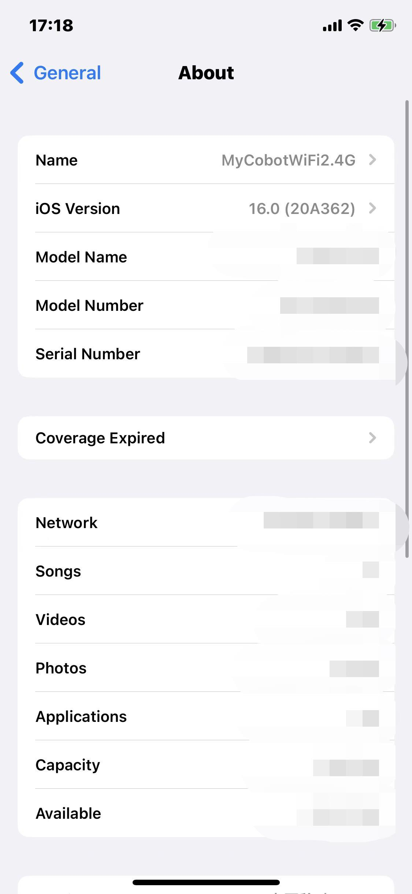
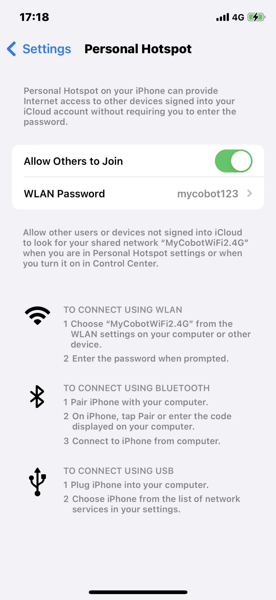
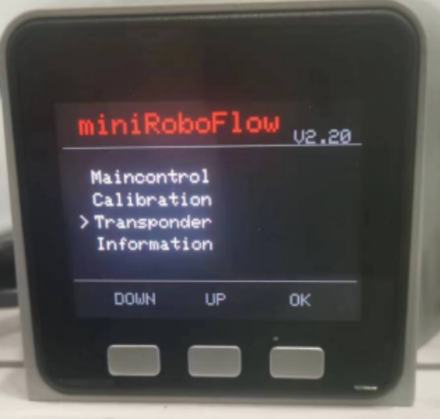
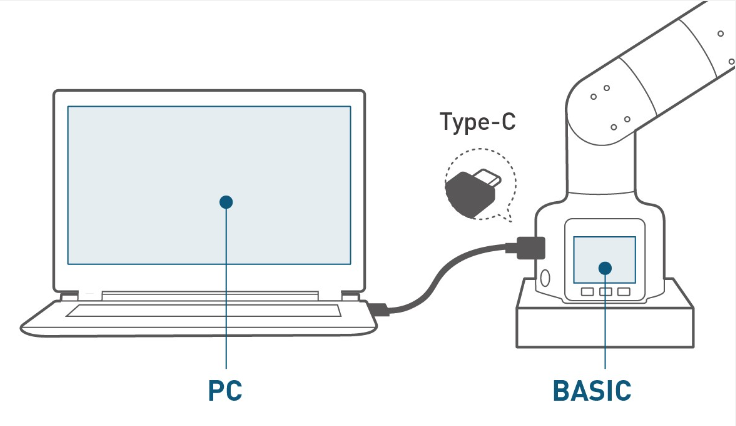
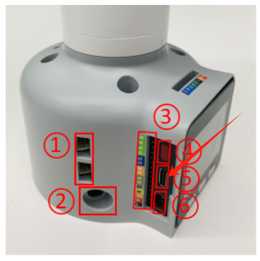
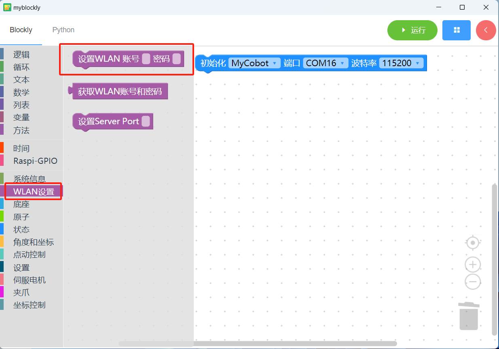
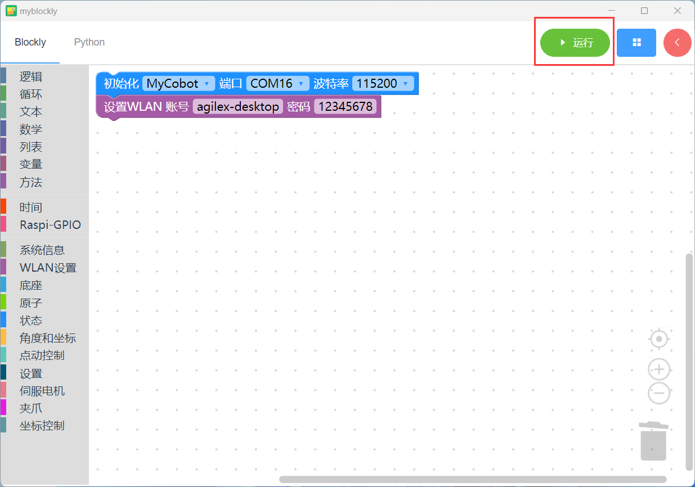

1. TCP/IP
TCP/IP transmission protocol, namely transmission control/network protocol, is also called network communication protocol. It is the most basic communication protocol in the use of the network, and stipulates the standards and methods for communication between various parts of the Internet. Users can connect to the robot arm through the IP address of the robot arm, so that the robot arm can be remotely operated without connecting to the USB port.
1.1. myCobot
Before using the robot arm, please make sure that the Basic firmware and Atom firmware have been burned.
1.1.1. 1 Connection steps
1.1 Create a default network
When the myCobot 280 m5 robot arm uses TCP/IP, it will use the default password "mycobot123" to connect to a network of "MyCobotWiFi2.4G".
At this time, we can use a mobile phone to create a hotspot, change the hotspot network name to "MyCobotWiFi2.4G", set the password to "mycobot123", and after turning on the hotspot, the robot arm will automatically connect to the mobile phone hotspot using the TCP/IP function. In the future, as long as they are in the same local area network, network communication can be carried out between devices.
The same is true for the router. Set the network name and password of the router, and the robot arm will connect to the router when the TCP/IP function is turned on.
One thing to note is that the myCobot 280 m5 robot arm only supports the 2.4 GHz network band. It does not support the 5 GHz network band. The following takes the mobile phone hotspot as an example.


1.2 TCP/IP function turned on
As shown in the figure, the robot arm clicks Transponder->WLAN Server through the button. If the connection is successful, the IP and port number will be displayed. If the connection fails, please check whether the network name and password are set correctly.
 
 ## 1.3 Connect to other networks
## 1.3 Connect to other networks
If you need to connect to other networks, you can download the myBlockly software provided by our company to connect to other networks.
Note: The 280 m5 cannot save the connected WIFI account and password when it is powered off. After the 280 m5 is powered off and restarted, it will still connect to the default WIFI account "MyCobotWiFi2.4G" and password "mycobot123". To connect to other networks, you need to set the WIFI account and password again.
Step 1: Connect PC and myCobot 280 m5


Step 2: Open myBlockly, set the WIFI account and password for 280 m5 to connect, and then click Run.


Step 3: The operation steps are as follows: Transponder -> WLAN Server, and the robot arm will connect to the "agilex-desktop" network.
1.1.2. 2 Case
Under the mobile phone hotspot, after the robot arm successfully starts the TCP/IP function, the robot arm will display the IP and port. You need to remember the IP and port.

Connect the PC to the same mobile phone hotspot as the robotic arm, call the python driver library, and you can connect to the robotic arm through the IP address of the robotic arm, so that you can remotely operate the robotic arm without connecting to the USB port.
from pymycobot import MyCobotSocket
# Default port is 9000
#"172.20.10.14" is the IP address of the robot arm. Please enter your own IP address of the robot arm
mc = MyCobotSocket("172.20.10.14",9000)
#If the connection is normal, you can control the robot arm
mc.send_angles([0,0,0,0,0,0],20)
res = mc.get_angles()
print(res)
...